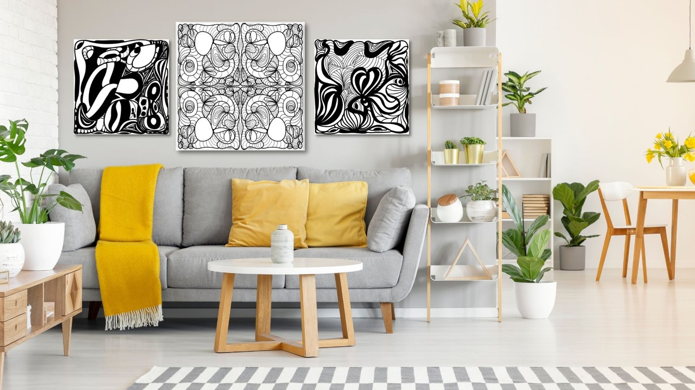
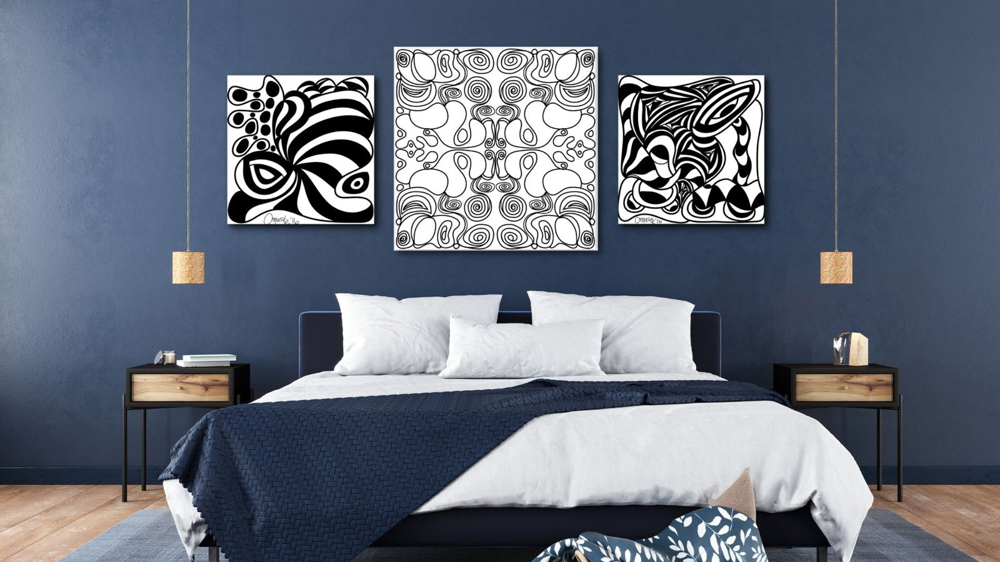
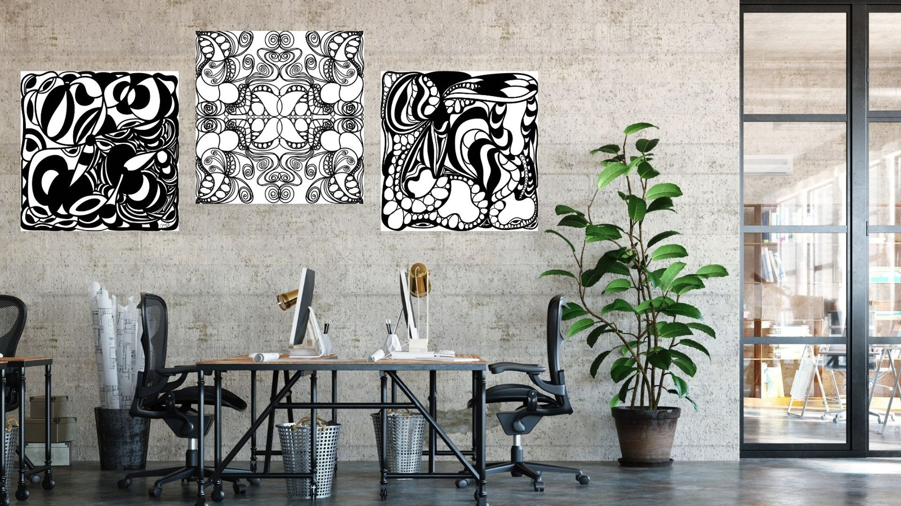
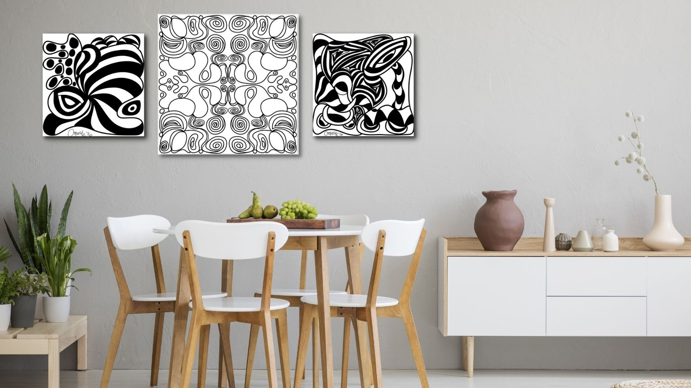
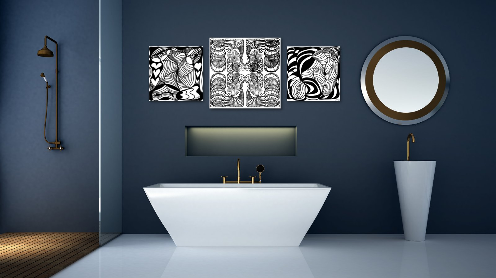

The Library · Omaste Witkowski
Line Art Drawings for Interior Designs

Line Art Might Just Be The Minimalist Statement Your Interior Designs Need
Art doesn’t have to be colorful or elaborate to make a statement. In fact, the simplest designs often have the most impact.
Line art is a classic type of drawing style that is influenced by the line drawings of Matisse and Picasso. They embrace simplicity and empty space, enhancing minimalism and elegance in any room.
Create a Welcoming Interior Using Line Art Drawings In Your Designs
Line art pieces are a great choice for interior designs and decor because they can be mixed with any type of room and color scheme. Minimalist line art can be used as a gift or a decor for office, home, bedroom, kitchen, college dorm, dining room, living room, family room, or even the bathroom.
Need some art to fill up the empty space(s) in your home or office? Add a minimalist line art. This type of art is not obtrusive and matches either colorful or minimalist homes. Place it on your bedroom, kitchen, living area, study area, or even at the office for a personal touch.
Line Art for Living Rooms

Line Art for Bedrooms

Line Art for Offices, Conference Rooms and Workspaces

Line Art for Kitchens And Dining Rooms

Line Art for Bathrooms

Line Art for Home Decor
Line art is perfect for any home, home decor and any room. With its fluid lines, it reveal new and interesting stories of people, nature, and abstract forms. It adds more life and character to any room in your house including the living room, kitchen, dining area, bedroom, bathroom office, entryway, and studio!
Not only can line art be used for art on a wall, there are quite a few ways you can incorporate it into your home decor in pillows, throws and more.
Find your own piece with the art adventure · Ask the gallery what fits your wall